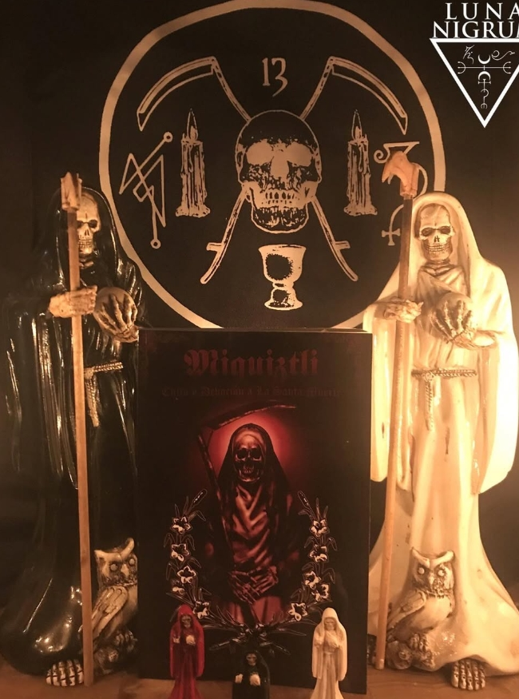
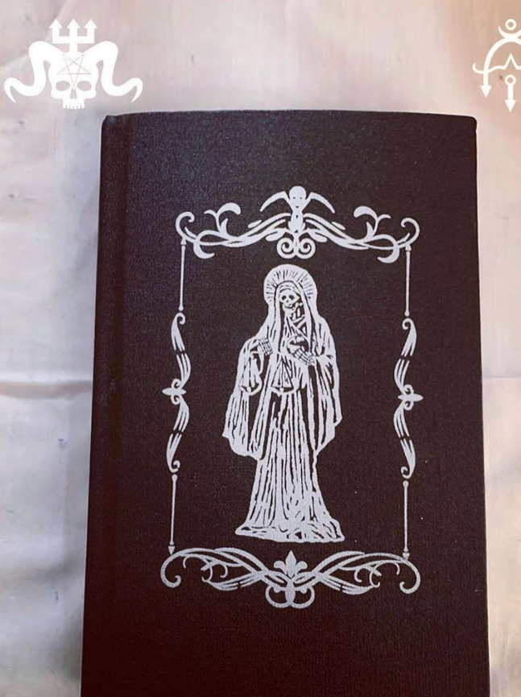
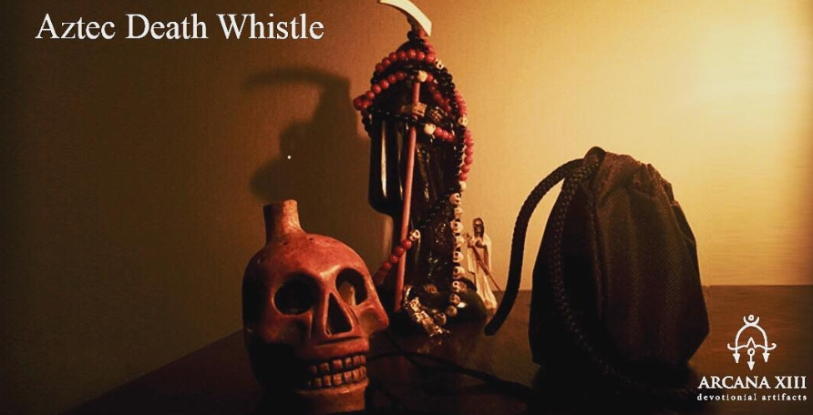
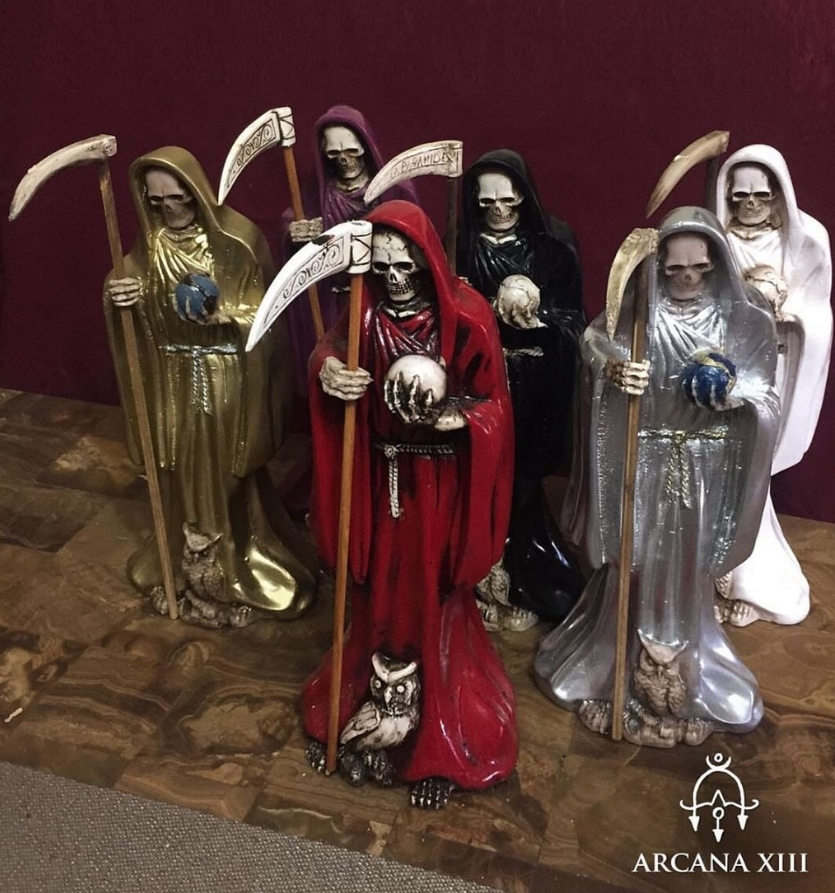
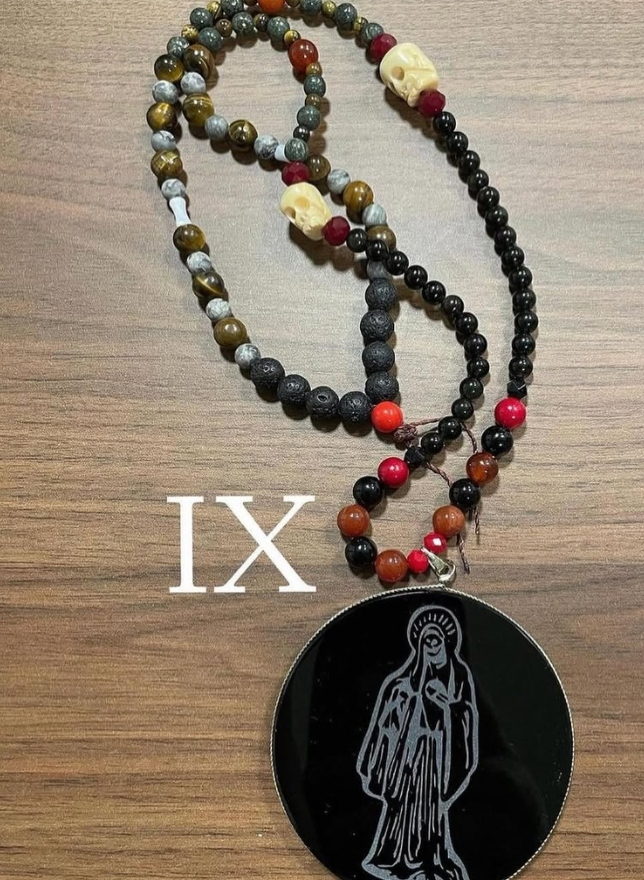
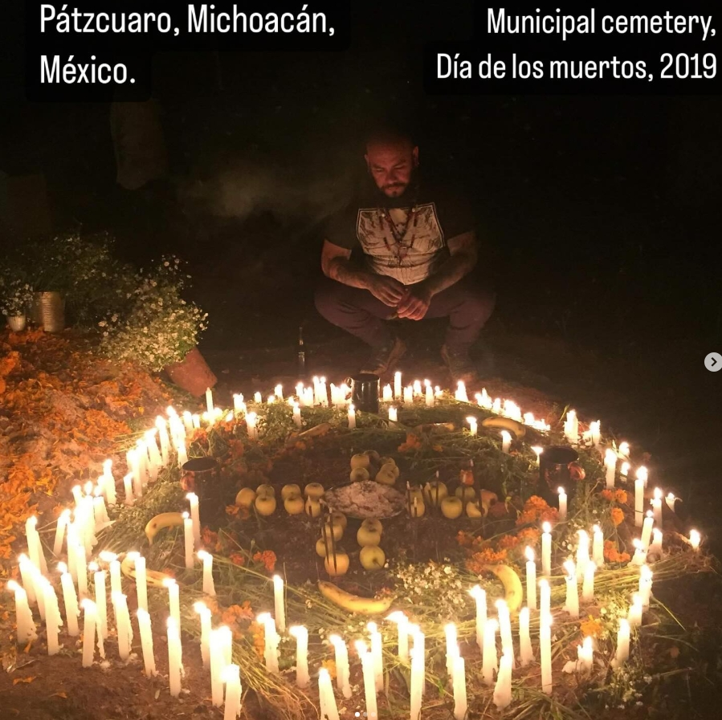
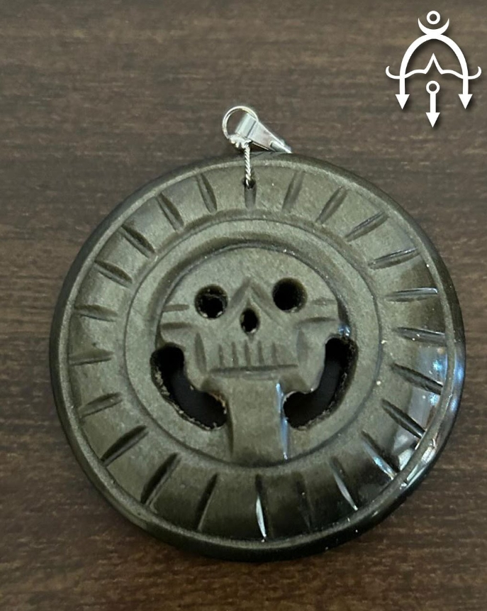

Mis Proyectos
Devoción a la Santa Muerte
"Devoción a la Santa Muerte". XIII Capítulos 303 páginas. Escrito y producido en México. Investigación histórica, antropológica y sociológica sobre las raíces, orígenes y evolución del culto. Rituales, oraciones, velas, aceites, collar de protección, inciensos, montaje de altares, significados de símbolos, iconos cadavéricos, herramientas de consagración, etc. Esta edición tendrá como regalo un espejo de obsidiana negra de 7cm con la imagen grabada de la Santa Muerte. Grimorios ingleses y españoles en stock. Enviamos a todo el mundo. Un día para enviar después de la compra y rastrear el número por correo electrónico. También incluirá temas relacionados con las obras de Black Mirror. - Limpieza y consagración del espejo negro. - Ritual para establecer comunicación con la Santa Muerte. - Ritual para comunicarse con los muertos - Incienso mortuorio - Consagración de herramientas rituales

Miquiztli
ahí se explica el origen y evolución del culto así como aspectos básicos, intermediarios y avanzados para que el practicante pueda avanzar por cuenta propia.

Adoramos a la Muerte
quería incluir algunos temas relacionados con el trabajo con espejo negro, enfocado en la nigromancia y con la Santa Muerte. Debido a esto, me sugirieron incluirlo, para que los devotos tuvieran una herramienta más con la que trabajar, completando así el libro de la Devoción a la Santa Muerte. - En estos temas se explica lo siguiente: - Limpieza y consagración del espejo negro. - Ritual para establecer comunicación con la Santa Muerte. - Ritual para comunicarse con los muertos - Incienso mortuorio - Consagración de herramientas rituales.

Silbato de la muerte
Decidimos producir los dos silbatos más detallados y abundantes. 10 piezas cada uno. Acabamos de cambiar los modelos, no el número de producción. Incluye una bolsa acolchada para protegerla, tarjeta impresa y una sorpresa. Serán ritualizados y ofrecidos a Santa Muerte por 13 noches. Tocando este artefacto devocional puedes escuchar y sentir el sonido de la muerte. Tenemos 2 modelos diferentes, suenan es una auténtica réplica de los originales, fueron hechos para artesanos mexicanos cuyas técnicas fueron probadas y perfeccionadas a través de generaciones.

Variedad de Silbatos de la muerte
Incluye una cuerda para colgar alrededor del cuello, pintas postal, poderoso regalo y bolsa acolchada. $55USD más envío. Silbato de la muerte azteca: La cultura azteca, tierra de guerreros, que extendieron su imperio luchando y conquistando otras culturas, crean y extraño método inusual para inspirar miedo en sus enemigos a través de un ataque psicológico llamado Ehecachichtli, también conocido como silbato de la muerte azteca.

Estatuas de la Santa Muerte
Estatuas tradicionales de la Santa Muerte (30cm). Colores disponibles: Rojo, negro y hueso. Stock muy limitado. Cada uno incluye 3 estatuas de 5cm de regalo. Envíe un mensaje directo para obtener más información.

Collares Magicos
Una producción de 13 collares con espejos grabados en obsidiana de 7cm. Los collares tienen materiales como ónix, oro y obsidiana negra, coral rojo, calaveras de hueso de animales talladas a mano, ojo de tigre, howlita, jaspe, cristal rojo y negro. Cada collar incluye de regalo: - 1 Tela estampada con un sello para trabajar con la Santa Muerte - 1 Estatua de 5cm Todos los materiales fueron producidos en México, pero serán enviados desde Brasil, que es donde vivo actualmente. La producción es limitada.

Ofrendas al Día de los Muertos
el Día de los Muertos y cada año, juntos, los devotos de la Santa Muerte suelen celebrarla también. Los últimos días de octubre al 2 de noviembre son para agradecerle por las bendiciones recibidas, no para hacer peticiones. Como sabéis, desde que comenzó el Arcano XIII en 2018, hemos hecho regalos a nuestros seguidores, clientes y amigos que forman parte de esta comunidad. En honor al Día de los Muertos, invitamos a los devotos a colaborar con un aporte mínimo de $5 USD para la compra de velas, flores y otros elementos para las ofrendas. Por favor comunicarse por instagram para sus donaciones. Cada contribución será acompañada por una vela con el nombre del devoto, que será encendida en su honor.

Colgantes Magicos
Hay una clara distinción en las tradiciones del mundo entre el sol visible y el invisible, entre lo exotérico y lo esotérico, entre lo externo y lo interno. Así, el "Sol de Níger" se relacionaba con el ocultismo, con los poderes ctónicos y por lo tanto, también con la serpiente que se transforma y se renueva, porque el viaje nocturno de la estrella significaba el trabajo secreto de transformación del sol y de las almas.
